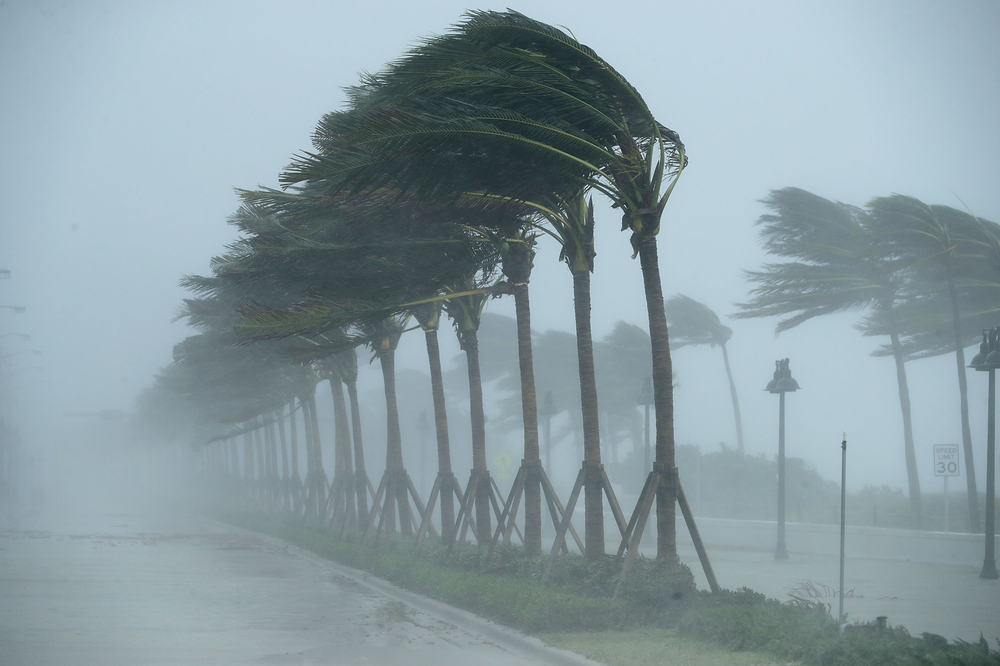
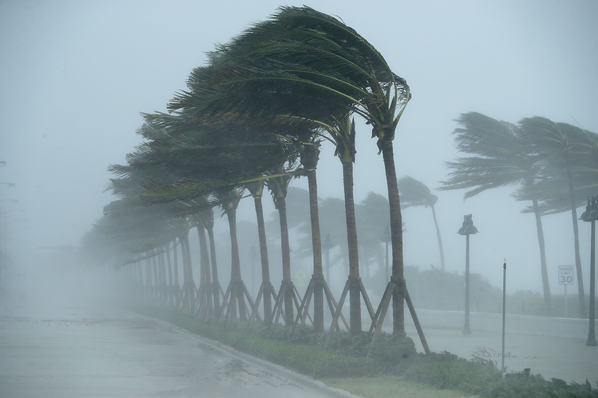

Natural Disasters Around The World
60,000 people die annually on average from natural disasters, which account for 0.1% of all fatalities worldwide. What we see is that over several years, the death toll can be extraordinarily low, frequently fewer than 10,000, and as low as 0.01 percent of all deaths. But we also witness the catastrophic results of shock events, such as the famine and drought in Ethiopia in 1983–1985, the tsunami and earthquake in the Indian Ocean in 2004, the Cyclone Nargis in Myanmar in 2008, and the earthquake in Port-au-Prince, Haiti, in 2010. Over 200,000 individuals died as a result of all of these accidents, which is over 2% of all fatalities during these years.
 

The visualisation makes it clear that the world's biggest earthquakes tend to occur in succession around the edges of huge tectonic plates. Due to Chile's location near the edge of the South American plate, two of the world's top five most powerful earthquakes happened there. Buildings are destroyed by earthquakes' powerful seismic waves, but they can also leave a path of destruction in their wake thanks to enormous tsunami waves that cut over the mainland. More than 2,000,000 people were left without a place to live as a result of the Valdivia earthquake alone.
Floods have a long history of being among the deadliest natural disasters. Certain flood catastrophes, which predominately occur in China, can result in the deaths of tens of thousands or even millions of people, as was the case in 1931 when the Yangtze and Huai Rivers flooded major cities like Wuhan, Nanjing, and other nearby cities. Flooding affects animals, crops, and infrastructure, resulting in starvation and the subsequent death of hundreds of thousands of people.
Hurricanes are storms with maximum sustained winds of 74 mph or higher. Based on a storm's maximum sustained winds, the Saffir-Simpson Hurricane Wind Scale assigns a hurricane a rating, or category, from 1 to 5. The possibility for property destruction increases with hurricane category. Repairing the damage caused by Typhoon Ida, which affected areas as far away as Canada and the United States, cost as much as 64.8 billion dollars. The top 10 hurricanes in terms of speed have all been either West Pacific or East Pacific in origin.
Natural Disaster Trends Overtime
While the frequency of earthquakes has dramatically increased since the 1990s, their magnitude appears to be gradually declining over time. This indicates that although the frequency of earthquakes has increased, their intensity has remained fairly constant.
Following the 1920s–1940s, which included the devastating great river floods in China that claimed millions of lives, the number of flood deaths dramatically decreased. Since then, improved flood control measures have been implemented, such as flood barriers and dams, which have greatly decreased fatalities.
Since the 1980s to the 2000s, storm frequency has been sharply rising while storm speed has been progressively declining over time. The downward trend in mean storm speeds may be explained by less intense storms being recorded by improved technology. Nevertheless, based solely on statistics, we cannot draw the conclusion that storms have been increasing generally less intense.